Figura
52
Figura
52Índice
Documento Slip/ Transferência 6
Inclusão de Transferência – Slip 6
Alteração de Transferência – Slip 7
Pagamento de Despesa Extra-Orçamentária 23
Receitas Por Período Tesouraria 29
Relatório de Retenções por CGM 39
Receitas sem ligação Orçamento/Plano 40
Demonstrativo de Pagamento a Fornecedor 43
Autentica Transferência/ Slip 48
Liberar/Bloquear Boletim de Caixa 50
Pagamento de Empenho por Agenda 59
Implantação de conciliação por conta 61
Exclusão de pendências antigas 63
A finalidade deste cadastro é filtrar as contas bancarias cadastradas no Plano de contas e adequá-las para o uso na tesouraria. Após a conta passar por esse cadastro é que ela realmente pode ser utilizada para efetuar pagamentos, e manuseada na Agenda de Pagamentos.
Campos para o cadastramento de uma Conta Pagadora:
Tipo: Este campo , é o seqüencial das contas já cadastradas, não é um campo que pode ser editado. Apenas seqüencial.
Descrição: Deve ser preenchido, com o nome da conta, de forma que fique fácil a identificação da conta em pagamentos e relatório.
Código da Conta: É possível clicar nesta opção , ou digitar o numero da conta. Numero este , que é o reduzido da conta no Plano de Contas.

Figura 1
Modelo : É possível clicar nesta opção , ou digitar o numero do modelo a ser utilizado. Este campo refere-se ao modelo a ser configurado na conta , e a finalidade a utilização da mesma. Dentre as opções de modelo estão os seguintes :

Figura 2
Convênio: Deve ser preenchido com o convênio da conta junto ao banco.
Cheque: Este campo serve para preencher com o numero correspondente, a numeração dos cheques desta conta.
Após o preenchimento de todos os campos , basta clicar em Incluir.
Na alteração deste cadastro é possível alterar todos os campos acima citados , menos o campo Tipo. Ao entrar na alteração de Conta Pagadora, serão disponibilizadas todas as contas já cadastradas como tal. Basta escolher a conta que deseja alterar, clicando sobre ela, e efetuar as alterações desejadas. Para confirmar clicar em Alterar.

Figura 3
Para a exclusão, basta escolher a conta a ser excluída e clicar em excluir.
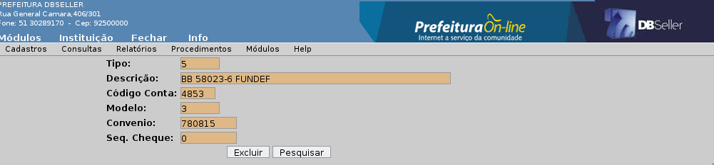Figura 4
Este cadastro faz a vinculação das receitas orçamentárias e extra-orçamentárias inclusas no plano de contas , com a tesouraria. A inclusão de uma receita na tesouraria é feita através da escolha de uma receita que já esta no plano de contas e prevista no orçamento, esta receita recebe um código que é utilizado na tesouraria para realizar arrecadações, que podem ser efetuadas por recibos avulsos e planilha de arrecadação.
Na inclusão de receitas, a tela inicial disponibiliza dados básicos para efetuar o cadastro da receita.
Receita: Este primeiro campo , não é aberto para cadastrar o numero da receita. Este campo é preenchido pelo sistema por um seqüencial de receitas cadastradas no caixa.
Tipo de Receita: Esta opção disponibiliza duas opções , Orçamentária e Extra-Orçamentária.
Orçamentária: Arrecadações de Receitas com previsão no Orçamento que pertencem ao grupo 4.0.0.0.0.00.00.00.00.00
Extra-Orçamentária: Arrecadações de valores em transito que não pertencem a instituição Prefeitura, e que fazem parte do grupo 2.1.1.0.0.00.00.00.00.00 na maioria dos casos.
Altera um registro cadastrado como Receita na Tesouraria.
Exclui um registro cadastrado como Receita na Tesouraria.
Este documento tem como finalidades básicas:
transferência entre contas de bancarias e,
pagamentos de Despesa extra orçamentária.
Campos para efetuar a transferência:
Código do Slip: Seqüencial , onde informa o numero do Slip.
Código a Debitar ( Receber): Disponibiliza a busca , pelo reduzido da conta , ou através do estrutural e nomenclatura. Contas de banco, Despesas extra Orçamentárias e contas de Resultado Aumentativo e Diminutivo do Exercício.
Código a Creditar (Pagar): Disponibiliza a busca , pelo reduzido da conta , ou pela nomenclatura, este campo disponibiliza apenas contas de banco. Isso significa que só podem ser creditadas contas de banco na transferência de Slip.
Histórico: É possível clicar sobre o Histórico, ou digitar um , para poder identificar a transferência que esta sendo realizada.
Numcgm: É possível clicar sobre o Numcgm, ou digitar o numero do cgm a ser utilizado na transferência.
Valor da Transação: Campo disponível para a digitação do valor a ser transferido.
Observações : Campo destinado para especificar o motivo da transferência, ou observações do procedimento.
Adicionar Recurso: Este botão serve para adicionar um ou mais recurso, dividindo assim o valor da transferência entre eles. Na inclusão da transferência, após escolha das contas, já traz marcado o recurso Livre, disponibilizando a alteração ou inclusão de recursos através do botão Adicionar Recurso.
Emitir: Este botão serve para a confirmação da transferência, logo é possível confirmar impressão do documento Slip.
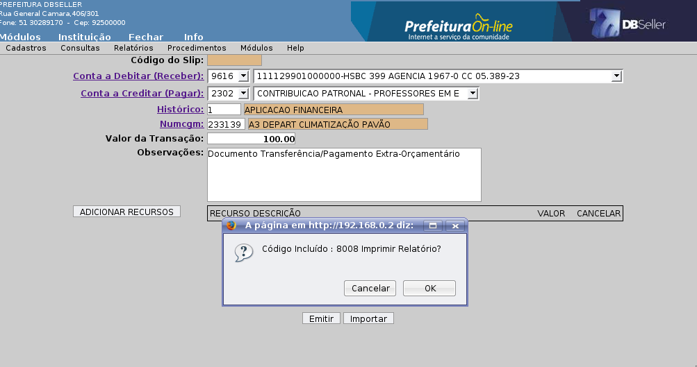Figura 5
Importar: Esta opção possibilita a importação de um outro Slip, para que possa ser aproveitado as informações contidas nas observações e configuração de contas, histórico, valores e recurso. A importação pode ser feita de qualquer Slip, estando ele autenticado , estornado ou agendado.
Esta opção possibilita alteração de Silps. A alteração é possível em Slips que ainda não foram autenticados e que não estejam vinculados a agendas de pagamento. Também não é possível a alteração de Slips estornados, após o estorno o Slip só pode ser autenticado novamente , ou importado para a criação de um documento novo.
O Slip pode ser filtrado por:
Código do Slip
Data:
Conta Credito:
Conta Debito:
Valor:
É disponibilizado também uma lista com Slips e seus principais dados, para melhor pesquisa-los.

Figura 6
Após a escolha do Slip a ser alterado, é possível a alteração de todos os campos do documento , para confirmar basta clicar em Emitir.

Figura 7
Este cadastro serve para cadastrar impressoras autenticadoras de recibos e de cheques, imprimindo as movimentações de pagamentos e arrecadações.
Para incluir uma autenticadora, basta a mesma estar conectada ao micro e preencher os seguintes campos:
Identificação 1:
Identificação 2:
Identificação 3:
Os campos citados acima servem para ser preenchidos com iniciais que serão impressas na autenticação, não são campos obrigatórios, o não preenchimento dos campos apenas não imprimira nada no lugar das iniciais.
IP Terminal: Este campo já vem preenchido automático com o IP do micro que esta sendo executado o procedimento de cadastro da impressora.
Local do Terminal: Campo este devera ser preenchido com um nome para o terminal, para melhor identifica-lo.
Código da Conta : Este campo pode ser preenchido com uma conta , para que esta seja padrão para autenticadora, possibilitando é claro a troca de contas no momento da autenticação.
String para Autenticação 1:
String para Autenticação 2:
Tipo de Autenticação: Existem três tipos de autenticação.
Autentica e Imprime: Com esta opção é possível autenticar no caixa e imprimi-la no papel.
Autentica e não imprime: Esta opção possibilita a autenticação no caixa, mas não imprime a autenticação no papel.
Não autentica e não imprime: Esta opção cadastra o terminal apenas para efetuar pagamentos de empenho , e não gerar nenhum tipo de autenticação no caixa.
Tesoureiro: Deve ser preenchido com o nome do tesoureiro.
Tipo de impressora:
Chronos
Bematech
Schalter
Tipo Impressora Cheque:
Chronos
Bematech
Elgin/imprecheq
IP Impressora Cheque: Este campo já vem preenchido com o IP do terminal que esta sendo cadastrado, mas pode ser alterado.
Porta Impressora Cheque: este campo deve ser preenchido com o numero da porta em que a impressora esta conectada, a porta padrão para este tipo de impressoras de autenticação é a 4444.
Imprime Assinatura nos Cheques: Permite imprimir a assinatura na emissão de cheques se estiver marcado a opção SIM.
Incluir : Para a inclusão da impressora após o preenchimento de todos os campos.
Pesquisar: Para que seja possível a procura de outras impressoras.

Figura 8
Alteração de autenticadora disponibiliza uma primeira tela com todas as autenticadoras já cadastradas. Para altera-las basta escolher uma clicando sobre ela.
É possível efetuar a pesquisa de autenticadora por :
Código do Terminal:
Local do Terminal:

Figura 9
Na alteração de autenticadora é possível alterar qualquer campo logo após as alterações basta clicar em Alterar.
Na exclusão é disponibilizado as autenticadoras já cadastradas, basta escolher a ser excluída e clicar em Excluir.

Figura 10
O cadastro de Contas, é para a inclusão das contas na tesouraria, juntamente com seu saldo e descrição. Dados este que são disponibilizados em relatórios como Boletim de Caixa entre outros. Para que a conta esteja disponível nesta opção , é necessário que ela esteja cadastrada, com o Sistema FINANCEIRO BANCOS, na inclusão da conta no Plano de Contas.
Campos obrigatórios para efetuar a inclusão de Contas:
Descrição da Conta: Clicando neste link, abrirá uma lista com as contas disponíveis para a inclusão na tesouraria .
Saldo da Conta: Preencher este campo de acordo com o saldo da conta.
Data da Atualização: Campo destinado a informar a data em que o cadastro foi atualizado. Geralmente a data atual.
Data Limite: Este campo serve para colocar uma data limite, data esta que, a partir dela não será possível a utilização da conta. Este campo não é obrigatório.
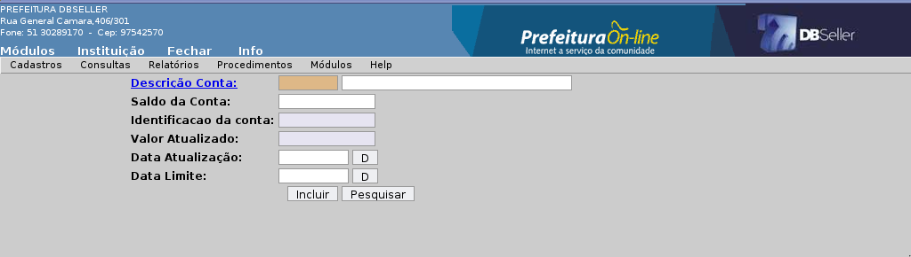Figura 11
Na alteração de contas, é disponibilizado uma lista com todas as contas já cadastradas. è possível também filtra-las pelo código e descrição da conta.
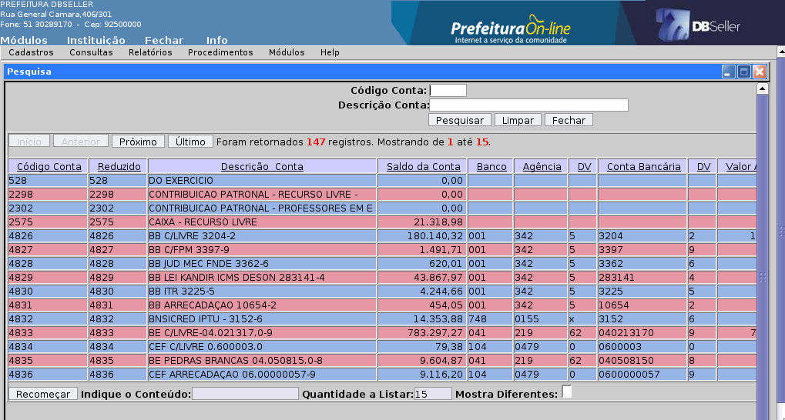Figura 12

Figura 13
Após a escolha da conta é possível alterar todos os campos, e para finalizar clicar em Alterar.
Para a exclusão, basta escolher a conta a ser excluída e clicar em excluir.

Figura 14
Esta consulta disponibiliza Todas as contas cadastradas na Tesouraria, informando o código, descrição, saldos iniciais , Créditos, Débitos e saldo final de cada conta, podendo ainda ser filtrada e apresentada de maneiras diversas. É possível defini a data inicial a ser consultada , e a consulta pode ser ordenada das seguintes formas:
Conta: Quando esta opção estiver marcada, será ordenada de forma crescente os códigos das contas, disponibilizando o saldo inicial , movimentações e saldo final de cada conta
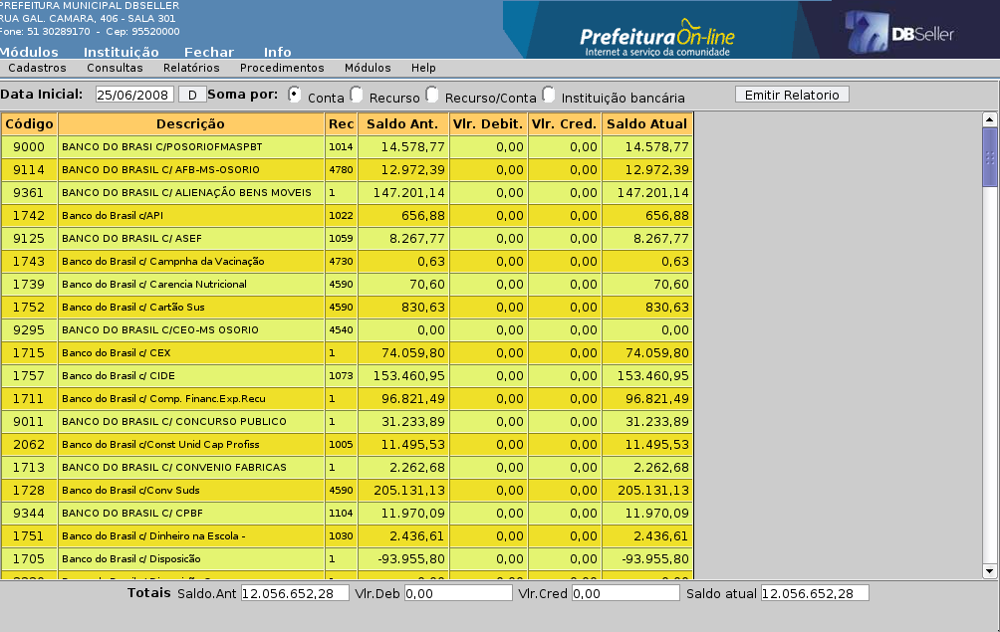Figura 15
Recurso: Quando esta opção estiver marcada, sera ordenada de forma crescente, os recursos e os saldo total das contas vinculadas aos mesmos.

Figura 15
Recurso/ conta: Quando esta opção estiver marcada, será ordenada de forma crescente os recursos e na seqüencia as contas referentes a cada recurso, disponibilizando o saldo inicial , movimentações e saldo final de cada conta.

Figura 16
Instituição Bancária: Quando esta opção estiver marcada, será ordenada por Banco a consulta, e logo as contas referentes aos bancos.

Figura 16
Na parte inferior da tela estão campos com os Saldo Anterior , Débitos, Credito e Saldo Atual.
É possível emitir um relatório das consultas efetuadas através do botão Emitir Relatório.

Figura 16
Esta consulta de arquivos, é referente a arquivos de pagamento gerados pela agenda de pagamento, disponibilizando as transações efetuadas em cada arquivo consultado, informando todos os dados da conta e valores e movimentação. Para efetuar a consulta basta colocar o numero do arquivo campo Código, caso não saiba o numero do arquivo , basta clicar sobre Código ou em Pesquisar Arquivo.

Figura 17
A consulta pode ser feita através da escolha de contas.
Tipo: Aqui podem ser escolhidas as contas, esta escolha pode ser feita, pelo código da conta ou nomenclatura. Para efetuar a consulta do arquivo escolhido , basta clicar sobre Consultar, caso queira imprimir a consulta em formato relatório, escolha a opção Gerar Relatório.

Figura 18

Figura 19
Disponibiliza a consulta de qualquer slip, independente de estar autenticado ou não. É possível somente a consulta de slips , do exercício em que o usuário está logado.
A consulta pode ser feita utilizando diversos filtros.
Código do Slip: Até: Disponibiliza a consulta de um slip, ou um intervalo seqüencial de documentos.
De: Até: Disponibiliza a consulta de slip, com um período especifico ou um intervalo de datas.
Recurso: Possibilita a consulta dos documentos do recurso escolhido, podendo ainda fazer combinações com datas para um consulta mais detalhada.
Situação: Refere-se a situação do documento:
Todas: Documentos Autenticados, não Autenticados, Estornados e Cancelados.
Não Autenticados : Apenas os documentos Não Autenticados.
Autenticados: Apenas os documentos Autenticados
Estornados: Apenas os documentos Estornados.
Cancelados: Apenas os documentos Cancelados. Esta opção permanece no sistema , por que existem documentos cancelados em outros exercícios. Na verão atual do sistema não existe mais a opção de Cancelamento de Slip. Esta opção foi desabilitada para que possa existir um maior controle sobre os documentos.
Numcgm: Filtro para utilizar o numero do CGM, utilizado no Slip
Para efetuar a consulta basta escolher a combinação de filtro que melhor identifica o documento a ser consultado e clicar em Consultar.

Figura 20
Após a escolha do documento é disponibilizada uma tela com todas as informações do documento.

Figura 21
Esta consulta permite pesquisar informações contidas em uma determinada agenda e visualizar seu conteúdo. Consulta esta que pode ser feita a partir de vários filtros.

Figura 22
Informa todas as receitas cadastradas na tesouraria. Nele são listadas as receitas orçamentárias e as extra-orçamentárias. Este relatório informa o código do orçamento das receitas, o código da tesouraria, o estrutural e o nome de cada receita cadastrada.
A emissão do relatório pode ser filtrada das seguintes formas.
Receitas:
Orçamentárias/ Extra-Orçamentárias: Lista todas as receitas cadastradas, as Orçamentárias e as Extra-Orçamentárias.
Orçamentárias: Apenas as Orçamentárias.
Extra-Orçamentárias: Apenas as Extra-Orçamentárias.
Todas: Lista todas as receitas cadastradas na tesouraria.
Liberadas: Lista somente as receitas que não tem data limite
Bloqueadas:Lista somente as receitas que estão bloqueadas, ou seja as receitas que tem uma data limite. Data esta que impede a utilização delas na tesouraria.
Ordem:
Alfabética: Ordena as receitas em ordem alfabética.
Numérica: Ordena as receita em ordem crescente de códigos de cadastro na tesouraria.
Estrutural: Ordena as receita em ordem crescente de estrutural.
Para gerar o relatório basta clicar em Exibir Relatório.

Figura 23

Figura 24
Relatório de Contas da Tesouraria informa todas as contas bancárias que estão cadastradas na tesouraria, informando o código da conta, reduzido na contabilidade e a nomenclatura a elas destinada.
O relatório pode ser ordenado de duas maneiras.
Alfabética: Lista as contas bancárias em ordem alfabética.
Numérica: Lista as contas bancárias por ordem crescente de código.
Para gerar o relatório basta clicar em Exibir Relatório.
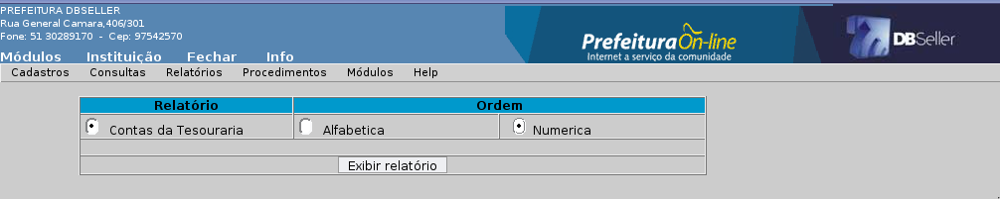Figura 25

Figura 26
Relatório de Bancos da Tesouraria informa todos que estão cadastrados na tesouraria, informando o código do banco, agencia e o nome do banco.
O relatório pode ser ordenado de duas maneiras.
Alfabética: Lista os bancos em ordem alfabética.
Numérica: Lista bancos por ordem crescente de código.
Para gerar o relatório basta clicar em Exibir Relatório.

Figura 27

Figura 28
Relatório de Autenticadora da Tesouraria, informa todos as Autenticadoras que estão cadastrados na tesouraria, informando o terminal, código do IP e o local.
O relatório pode ser ordenado de duas maneiras.
Alfabética: Lista as Autenticadora em ordem alfabética.
Numérica: Lista as Autenticadoras por ordem crescente de terminal.
Para gerar o relatório basta clicar em Exibir Relatório.

Figura 29

Figura 30
Faz uma demonstração analítica das movimentações correspondentes aos pagamentos de Despesas Extra-Orçamentárias e das transferências bancárias realizadas em um determinado intervalo de datas. Detalha estas movimentações, no tocante aos dados da autenticação e dos documentos referentes a cada pagamento ou transferência.
As opções de impressão são as seguintes:
Código da Conta: define a conta bancária a ter suas movimentações impressas. Caso não seja informada uma conta neste campo, o Sistema fará a impressão do relatório com todas as contas que tiveram movimentação no período selecionado;
Intervalo de datas: define o período das movimentações a serem impressas;
Imprimir histórico (SIM/NÃO): opção por imprimir ou não o histórico do documento correspondente a movimentação.
Um clique no botão “Emitir Relatório” efetiva a impressão.

Figura 31
Dispõe de informações de diversos slips, e seu principal diferencial é que a sua consulta pode ser filtrada por conta. Facilitando a conferencia de movimentações por documento de silp por conta. Além do campo Conta para auxiliar nos filtros para emissão do relatório, são disponibilizados mais alguns para que possa facilitar ainda mais a consulta.
Código da Conta : Campo para preencher com o código da conta bancaria e que encontram-se as movimentações de documentos slips. Caso não seja informada a conta , será feita uma consulta, validando as movimentações de todas as conta da tesouraria.
Contas: Este filtro disponibiliza duas opções: Debito e Crédito .
Totalizador: Este filtro disponibiliza duas opções: Debito e Crédito .
Ordem: Este campo refere-se a ordem de em que as movimentações seram organizadas as opções são:
Autenticação : Para colocar as informações em ordem de autenticação.
Slip: Para colocar as informações em ordem de Slip.
Recurso: Opção de filtro para escolha de um recurso em especifico ou todos.
Tipo de Data: filtro para escolha da data.
Autenticação: Data da autenticação do slip, somente autenticados.
Lançamento: Data da criação do slip, lista também os não autenticados.
De: Até: Período para a emissão do relatório.
Lista movimentos do Caixa: Opção para liberar a consulta e emissão no relatório, com as movimentações do Caixa. Este filtro tem as opções Sim e Não.
Para emitir relatório basta clicar em Emitir Relatório.
Relatório.
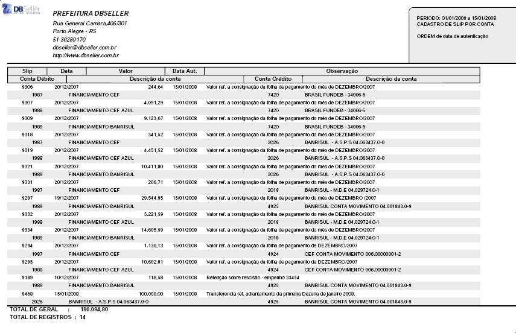Figura 32
Relatório que busca informações de todos os cheque s emitidos , informando as movimentações, contas , datas valores e credores. Segue filtros para emissão do relatório.
Contas
Tipo: Este campo é para ser preenchido com o tipo da conta bancaria, caso queira uma consulta por conta. Se não souber o tipo da conta, é possível clicar sobre Tipo , para procura-la. Logo é só clicar em Lançar para que a conta possa ser utilizada na pesquisa.
Utilizando ainda o recurso das contas , é possível escolher se quer que as contas “Lançadas”, sejam utilizadas na pesquisa ou ignoradas , utilizando as opções: Com as selecionadas ou Sem as Selecionadas.
De: Até: Disponibiliza a emissão da movimentação de cheque, com um período especifico ou um intervalo de datas.
Considerar: Opção de filtro com duas disponibilidades.
Somente Autenticados: Traz os cheques autenticados ou seja pagos.
Somente Não Autenticados: Traz os cheques não autenticados ou seja não pagos ou estornados .
Para emitir o relatório basta clicar em relatório.

Figura 33
Figura 34
Relatório de filtro especifico, voltado somente para os cheques cancelados . Este relatório utiliza apenas os campos para preenchimento de data para especificar o período, período este que refere-se a data de criação da agenda em que o cheque foi criado e cancelado.
Este relatório dispõem apenas dos campos para preencher a data.
De: Até: para especificar o período em que encontram-se os cheques cancelados.


Figura 35
Extrato Bancário , é um relatório com as movimentações das contas da Tesouraria e com todas as informações das movimentações, nele são listadas arrecadações, pagamentos , estornos, contas, históricos, totalizadores por contas, saldos iniciais e finais. Um estrato com todas as informações necessárias para uma verificação completa de movimentações.
Filtros para a emissão do Extrato Bancário.
Data inicial: Data final : Disponibiliza a emissão da movimentação da(s) conta(s), com um período especifico ou um intervalo de datas.
Código da Conta: Campo para indicar a conta Bancária a ser consultada no Extrato, caso não escolha nenhuma conta será emitido um extrato com todas as contas bancárias da Tesouraria.
Somente conta com Movimento: Opção para listar as contas com ou sem movimento na tesouraria, disponibiliza as opções sim e não.
Totalizador Diário: Opção para totalizar as movimentações por dia, caso a emissão do extrato for com um período do qual utilize mais de um dia , as totalizações podem ser feitas dia a dia. As opções da totalizar por dia são, Sim e Não.
Imprime Receita: Opção que disponibiliza a impressão das movimentações de receitas no extrato. As opções da impressão são, Sim e Não.
Imprime Resumo: Opção que disponibiliza a impressão dos resumos, tanto de pagamentos quanto de arrecadações no extrato. As opções da impressão são, Sim e Não.
Tipo de Impressão: A impressão do Extrato pode ser Analítica ou Sintética.

Figura 36
Extrato Bancário , é um relatório com as movimentações das contas da Tesouraria e com todas as informações das movimentações, nele são listadas arrecadações, pagamentos , estornos, contas, históricos, totalizadores por contas, saldos iniciais e finais. Um estrato com todas as informações necessárias para uma verificação completa de movimentações.
Filtros para a emissão do Extrato Bancário.
Data inicial: Data final : Disponibiliza a emissão da movimentação da(s) conta(s), com um período especifico ou um intervalo de datas.
Código da Conta: Campo para indicar a conta Bancária a ser consultada no Extrato, caso não escolha nenhuma conta será emitido um extrato com todas as contas bancárias da Tesouraria.
Somente conta com Movimento: Opção para listar as contas com ou sem movimento na tesouraria, disponibiliza as opções sim e não.
Totalizador Diário: Opção para totalizar as movimentações por dia, caso a emissão do extrato for com um período do qual utilize mais de um dia , as totalizações podem ser feitas dia a dia. As opções da totalizar por dia são, Sim e Não.
Imprime Receita: Opção que disponibiliza a impressão das movimentações de receitas no extrato. As opções da impressão são, Sim e Não.
Imprime Histórico: Opção que disponibiliza a impressão dos resumos, tanto de pagamentos quanto de arrecadações no extrato. As opções da impressão são, Sim e Não.
Tipo de Impressão: A impressão do Extrato pode ser Analítica ou Sintética.
Somente contas Bancarias: Opção que disponibiliza a impressão das contas de banco ou contas como a(s) conta(s) caixa. As opções da impressão são, Sim e Não.

Figura 37
Figura 38
Este relatório tem por objetivo demonstrar a movimentação proveniente da Arrecadação de Receita em um período determinado.
Seleção do Período: O usuário poderá filtrar o período desejado para emissão do relatório. O período será definido pela escolha de uma Data Inicial e uma Data Final.
Seleção específica de Receitas: O relatório está dotado de um filtro onde o usuário pode selecionar uma determinada receita ou uma série de receitas, selecionadas uma a uma. A seleção se dará por meio da indicação da receita desejada e sua confirmação através do botão "Lançar". As receitas ainda podem ser pesquisadas através do link "Receita".
Filtro de Receitas pelo código Estrutural do Plano de
Contas
O campo Estrutural
da Receita
possibilita filtrar determinados grupos de Receitas, através
de sua classificação contábil no Plano de Contas
Este campo é de livre digitação e obedecerá
os níveis das contas as quais se referem a fração
do código estrutural digitado. Eis um exemplo prático:
Caso o usuário digite no campo a fração
de estrutural "4193", o relatório imprimirá
todas as receitas correspondentes a conta "Receita da Dívida
Ativa".
Definição do Tipo de Receita: O relatório trata como tipo de receita, a sua classificação entre Receita Orçamentária e Receita Extra-Orçamentária. Através deste campo, o usuário poderá segregar estas duas classificações na emissão do relatório ou optar por imprimir ambas.
Desdobramento da Receita: Esta opção consiste em reproduzir na movimentação das arrecadações de receitas listadas no relatório, os efeitos do Desdobramento da Receita neste caso aplicados às Receitas de natureza Orçamentária.
Definição da Ordem de Emissão: As opções constantes no campo Ordem definirão a ordem dos dados a serem impressos. As opções de ordenamento são:
Receita: Ordena pelo código da Receita na Tesouraria, cadastrado através da inclusão de receitas.
Estrutural: Ordena pelo código estrutural no Cadastro do Plano de Contas.
Alfabética: Ordena na ordem das Descrições das contas de receita.
Reduzido:
Ordena pelo código da Receita no Orçamento.
Tipos
de Impressão: Este
relatório poderá ser emitido segundo três
perspectivas, sendo que duas delas sintéticas e uma analítica,
onde serão listadas uma a uma todas as autenticações
das receitas filtradas pelo usuário.
Filtro pelo Recurso: Este filtro possibilita ao usuário determinar a emissão do relatório escolhendo apenas um recurso orçamentário para as receitas que deseja imprimir.
Após determinar todas as opções de impressão disponíveis, o relatório poderá ser emitido com um clique no botão "Processar".

Figura 39

Figura 40
Tem por objetivo principal a emissão diária do Boletim da Tesouraria.
Trata-se de um relatório que demonstra um espelho da movimentação diária das contas de Caixa e Bancos, bem como seus saldos, além de alguns detalhamentos que darão suporte a compreensão das movimentações efetuadas no dia de sua emissão.
Estes detalhamentos, exibidos separadamente em quadros distintos e de forma sintética, são:
as transferências bancárias;
as arrecadações da Receita Orçamentária;
as arrecadações de Receitas Extra-Orçamentárias;
os pagamentos de Despesas Orçamentária (empenhos) e,
os pagamentos de Despesas Extra-Orçamentárias.
Para emitir o Boletim, basta selecionar no formulário a data desejada no campo “Data Inicial” e clicar no botão “Boletim”.
Além da forma padrão do Boletim, este relatório também pode ser emitido em forma de detalhamento de todas as autenticações realizadas nos terminais de Caixa em uma determinada data ou intervalo de datas (nesta opção é necessário informar também o campo “Data Final”).
Este relatório dispõe de diversas opções e filtros que determinam a forma de visualização de escolha do usuário, as quais seguem abaixo:
Data inicial: Define a data inicial das informações e é suficiente para a emissão pura e simples do Boletim da Tesouraria.
Data final: Define a data final de um determinado intervalo de tempo para o caso da impressão das autenticações para conferência.
Código do terminal: Filtro que possibilita visualizar as autenticações de um determinado terminal de caixa.
Código conta: Filtro que possibilita visualizar as autenticações de uma determinada conta bancária ou de caixa.
Imprimir contas sem movimento: Campo onde o usuário pode definir se deseja ou não imprimir no Boletim informações de contas bancárias sem movimento.
Imprimir em cinza as contas negativas: Esta opção tem a finalidade de destacar ou não as contas bancárias com saldo negativo na impressão do Boletim, no sentido de alertar ao usuário.
Imprimir interferências: Opção de exibir ou não contas referentes a movimentação de interferências ativas ou passivas na impressão do boletim, caso figurem em contabilizações da entidade.
Quebrar páginas: Tem por finalidade definir se o usuário deseja quebrar ou não páginas na impressão do boletim entre quadros de detalhamento diferentes.
Ordem: Define como o Boletim ordenará a listagem dos bancos. Atualmente, as opções são: por código reduzido da conta bancária, código estrutural da conta no plano contábil e pela descrição (nome da conta).
Boletim
Imprime o Boletim da Tesouraria na data e pelos filtros definidos pelo usuário.
Autenticação Completo
Emite a listagem analítica de todas as autenticações, obedecidos os filtros definidos pelo usuário, compreendidas no intervalo de datas informado.
Autenticação Resumido
Emite o mesmo relatório, porém de forma sintética.
Autenticação por Conta.
Lista as autenticações de forma analítica, agrupando-as por conta bancária.

Figura 41

Figura 42
O relatório da Agenda de Pagamentos, é bem específico e pratico.
É possível escolher agenda no campo Agenda . Logo é possível escolher as opções:
Tipo: Onde tem duas opções, Dados da conta ou Dados do empenho.
Impressão por: Pode ser filtrado por , Conta pagadora ou Recurso.

Figura 43

Figura 44
Disponibiliza a impressão de qualquer movimentação de slip, podendo ele estar autenticado ou não, é possível somente a consulta de slips , do exercício corrente ou em que o usuário esta acessado.
O Relatório pode ser emitido utilizando diversos filtros.
Código do Slip: Até: Disponibiliza a emissão da movimentação de um slip, ou um intervalo seqüencial de documentos.
De: Até: Disponibiliza a emissão da movimentação de slip, com um período especifico ou um intervalo de datas.
Recurso: Possibilita a emissão da movimentação dos documentos do recurso escolhido, podendo ainda fazer combinações com datas para uma consulta mais detalhada.
Situação: Refere-se a situação do documento:
Todas: Documentos Autenticados, não Autenticados, Estornados e Cancelados.
Não Autenticados : Apenas os documentos Não Autenticados.
Autenticados: Apenas os documentos Autenticados
Estornados: Apenas os documentos Estornados.
Cancelados: Apenas os documentos Cancelados. Esta opção permanece no sistema , por que existem documentos cancelados em outros exercícios. Na verão atual do sistema não existe mais a opção de Cancelamento de Slip. Esta opção foi desabilitada para que possa existir um maior controle sobre os documentos.
Numcgm: Filtro para utilizar o numero do CGM, utilizado no Slip
Para efetuar a emissão da movimentação basta escolher a combinação de filtro que melhor identifica o documento a ser impresso e clicar em Emitir Relatório.

Figura 45

Figura 46
Este relatório apresenta os fornecedores e seus dados cadastrados, disponibiliza o CGM, nome , Banco, agencia, conta e CNPJ do fornecedor.
O relatório pode ser filtrado utilizando os seguintes filtros:
Bloqueados:
Sim :Somente os fornecedores que estiverem em situação bloqueados.
Não: Somente os fornecedores que não estiverem bloqueados.
Todos: Todos os fornecedores, bloqueados e não bloqueados.
Ordem:
Alfabética: Organiza os fornecedores em ordem alfabética.
Numérica: Organiza os fornecedores em ordem numérica crescente.
Fornecedores:
Todos: Todos os fornecedores, os com contas bancarias cadastradas e os sem contas cadastradas
Com Conta: Somente os fornecedores com contas bancarias cadastradas.
Sem Contas: Somente os fornecedores sem contas bancarias cadastradas.
Para emitir o relatório basta escolher a combinação de filtros e clicar em “Emitir Relatório”.

Figura 47

Figura 48
Este relatório disponibiliza as planilhas e suas movimentações, com as receitas, contas , recursos, históricos e valores, demonstrando as informações de maneira clara. O relatório de planilhas pode ser emitido utilizando diversos filtros, são eles:
De: Até: Campo que deve ser preenchido com o período referente a criação da planilha, período que pode ser um em especifico ou um intervalo de período
Código Conta: Este campo é para ser preenchido com o código da conta bancaria, caso queira uma consulta por conta. Se não souber o código da conta, é possível clicar sobre Código , para procura-la. Logo é só clicar em “Lançar” para que a conta possa ser utilizada na pesquisa.
Utilizando ainda o recurso das contas , é possível escolher se quer que as contas “Lançadas”, sejam utilizadas na pesquisa ou ignoradas , utilizando as opções: Somente Selecionadas ou Menos Selecionadas.
Para emitir o relatório basta clicar em “Emitir Relatório”.

Figura 49

Destina-se a reemitir uma planilha de caixa.
Tem como opções de impressão:
Planilha: informar o código da planilha desejada;
Intervalo de datas: definir o período desejado para impressão;
Filtrar por: define duas formas de verificação, que são as datas de lançamento ou de autenticação.
Um clique no botão “Pesquisar” efetiva a impressão do relatório.
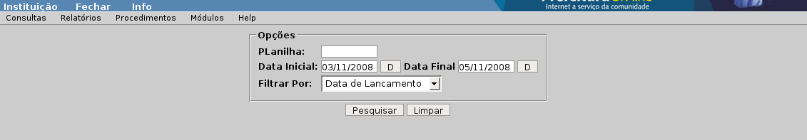Figura 51
Tem por finalidade listar por CGM um demonstrativo dos pagamentos realizados e das retenções de tributos efetuadas para o mesmo. A demonstração dos valores é agrupada mensalmente.
Para emitir o relatório, o usuário poderá selecionar um determinado credor, através do campo Numcgm e uma ou mais receitas, onde são contabilizadas as retenções através do campo destinado a seleção das mesmas, o qual obedece o padrão do sistema. Também poderá ser definido um intervalo de datas para emissão.
 Figura
53
Figura
53
Este relatório, é um demonstrativo de estorno de pagamento onde tem os dados do empenho, valores, dados do fornecedor, histórico e ainda assinaturas dos responsáveis
Para a emissão do relatório basta saber o Código do empenho e colocar no campo Empenho, ou a numero o empenho para preencher o campo Numero e clicar em “Emitir Estorno”.


Relatório que informa a movimentações bancarias que estão para ocorrer, ordens de pagamento que ainda não estão em arquivos , para serem enviados para banco. Este é um relatório que mostra um montante do que tem de movimentações para serem inseridas em arquivos. Relatório de Arquivos a gerar pode ser filtrado por :
Banco: Vai depender de quantos bancos o cliente tem cadastrado, nesta opção disponibilizara todos os que estiverm cadastrados na tesouraria.
Ordem:
Nome do Fornecedor: Ordenara os dados do relatório por ordem alfabética, agrupando por fornecedor.
CGM Fornecedor: Ordenara os dados do relatório por ordem numérica crescente , agrupando por CGM.
Recurso: Ordenara os dados do relatório por ordem numérica crescente de recursos, referentes a os empenhos.


Este relatório disponibiliza as movimentações que já estam em arquivos, prontos para serem enviados para o banco para efetuar os pagamentos. Nele estão contidas todas as informações referente a ordem pagamento e ao fornecedor.
Este relatório é pelo código, que é gerado na sua criação , ou por conta. Para filtrar por conta basta escolher a conta nas opções disponibilizadas no campo Conta Pagadora.

Relatório e Arquivo retorno, informa as movimentações efetuadas no banco, entre contas, efetuando pagamentos ou agendo-os. Nele estão disponíveis as informações das transações e valores movimentados. Para a emissão deste relatório basta escolher o arquivo retorno que deseja conferir, preenchendo o campo Código , com numero do arquivo retorno, caso não saiba o código do arquivo.
É possível clicar sobre o Código , para que abra uma tela com alguns filtros para facilitar a pesquisa. Pra imprimir o relatório basta clicar em “Mostrar Retorno”.
Este é um demonstrativo que ser para confirma pagamentos efetuados através de arquivos bancários.
Este demonstrativo pode ser emitido com um ou mais pagamentos, e pode ser filtrado o pagamento de diversas maneiras.
Pode ser filtrado por :
Período: pode ser procurado em um determinado período ou intervalo de período.
Numcgm: Filtro através do cgm.
Código da Conta: Filtro dos pagamento de uma determina conta.
Estornos : Esta opção disponibiliza três tipos de filtro.
Todos: Estornado e não estornados.
Não: Somente os não estornados.
Sim: Somente os estornados.
Ordem de Pagamento: É possível clicar sobre Ordem , e escolher a ordem de pagamento a ser lançada para emitir o Demonstrativo de Pagamento a Fornecedor
Após a escolha da(s) ordem(s), ou combinações de filtros basta clicar em Pesquisar para que seja disponibilizado logo abaixo as opções a serem imprimidas.
Para imprimir o demonstrativo, basta escolher a ordem de pagamento e clicar em “imprimir”.


O procedimento de Arrecadação de Receita possibilita a autenticação de recibos emitidos na tesouraria. Para autenticar um recibo basta te-lo em mão para que seja feita a leitura do código de barras, ou o código de autenticação para preencher e autenticar.
A tela de autenticação disponibiliza os seguinte recursos.
Conta: Este campo é para que possa escolher a conta em que a arrecada referente a autenticação do recibo vai entrar.
Autenticar: Campo que deve ser preenchendo manualmente com o código de arrecadação ou com o leitor de código e barras.
Calcular: Opção que possibilita o calculo e visualização do código de autenticação informado.
Baixa Bancos: Verifica sem existe alguma baixa de banco para autenticar.
Autenticar: Confirma a autenticação e concretiza a arrecadação da receita.

Planilha de Lançamentos , é um procedimento para efetuar arrecadações de receitas , a planilha pode conter uma ou mais arrecadações as arrecadações são feitas com receitas que já estão cadastradas na tesouraria, as receitas podem ser orçamentárias ou extra- orçamentárias.
Para incluir uma planilha basta entrar na inclusão de planilha, e preencher os campos de acordo com a arrecadação a ser realizada.

Planilha:
Nesta primeira Aba estão as informações iniciais da planilha, como numero da planilha, data e uma botão de pesquisa.
Receitas.
Nesta aba estão os campo para informar receita, cota bancária e outras informações.
Lançamento: Este é uma campo seqüencial preenchido automaticamente .
Planilha: Informa o numero da planilha.
Código da Receita: Este campo serve para preencher com o código da receita na tesouraria. Caso não tenha o código da receita disponível, clicar em Código da Receita , a conta a ser receita a ser utilizada.
Código da Conta : Este campo serve para preencher com o código da conta bancária . Caso não tenha o código da receita disponível, clicar em Código da Conta , para pesquisar a conta a ser utilizada.
Recurso: Este campo , já vem com o recurso da conta bancaria marcado, mas é possível altera-lo, basta clicar para que abra a janela com as outras opções de recursos.
Operação Banco: Este campo é para preenchimento de dados para melhor identificar o tipo de movimentação, não é um campo obrigatório.
Valor: Campo para informar o valo a ser arrecadado, valor este que pode ser positivo ou negativo , dependendo da movimentação.
Observação: O próprio nome do campo sugera, é para colocar observações e informações da movimentação.
Incluir: Para incluir a a movimentação referente ao preenchimento dos campos.
Importar: Esta opção serve para importar uma planilha , para que possam ser utilizados ou alterados os dados em uma nova planilha.
Zerar Campos: opção para limpar todos os campos .
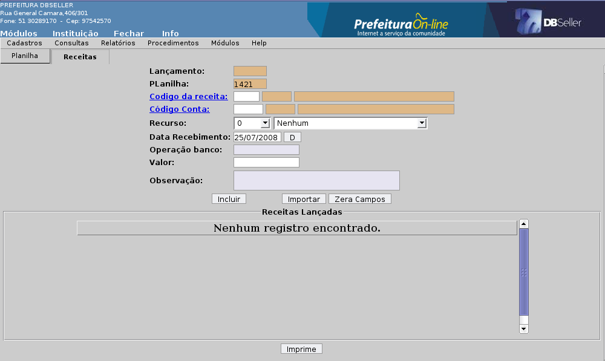
Após a inclusão de um lançamento, ainda é possível a alteração e exclusão do lançamento, com a utilização das opções A e E , que estam ao lado do lançamento, possível a inclusão de vários lançamentos um a um na planilha . Para a impressão da planilha clicar em “Imprime”.
Disponibiliza a alteração de qualquer campo, só não pode ser alterada uma planilha que já oi autenticada, caso queira uma alteração de uma planilha de lançamentos já autenticada, após o seu estorno crie uma nova planilha e importe-a , aplicando assim as mudanças necessárias.

Exclusão de planilha permite a exclusão de planilhas , não autenticadas. As planilhas autenticadas e estornadas não podem ser excluídas. Para excluir uma planilha basta escolhe-la entre as disponíveis e clicar em Excluir.

Esta opção de autenticar a planilha é o procedimento que concretiza o lançamento de arrecadação no boletim e demais relatórios da tesouraria. A autenticação da uma planilha ó pode ser feita se o boletim de caixa ainda não foi liberado para a contabilidade. Para autenticar uma planilha basta escolhe-la entre as disponíveis ( planilhas disponíveis , são as planilhas que não foram autenticadas nem excluídas), e clicar em autenticar.

Esta opção é para estornar planilhas já autenticadas, e que período em que o boletim o boletim não ainda não esteja lançado na contabilidade. Para estornar uma planilha basta ela estar autenticada, escolhe-la entre as disponíveis e clicar em Estornar.
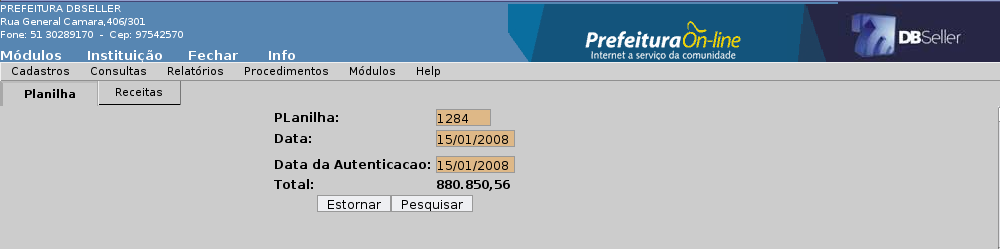
Este procedimento serve para concretizar a transferência de slip, a autenticação do slip, é a validação das movimentações das contas e saldos. Após a autenticação do Slip, é possível a conferencia em relatórios da tesouraria.
Para estornar um documento de Slip, é no mesmo procedimento , a diferença é a situação do slip . Quando escolhido o slip, vai disponibilizar a procedimento de acordo com a situação do slip, caso ele não esteja autenticado vai liberar a opção Autenticar . caso o slip já esteja autenticado vai liberar a opção Estornar. Para entra na na procedimento de autenticação basta colocar um código de slip e clicar em Pesquisar. Caso não tenha disponível o código do Slip , basta clicar em “Slip”, e procurar

Após a escolha do código , vai disponibilizar a autenticação ou estorno do documento. Nesta tela estão as informações a transferência que esta por ser concretizada com a autenticação. Nesta tela vai disponibilizar as opções.
Autenticar: Para autenticar o documento.
Retornar: Para retornar a tela de pesquisa.
Imprimir: Para emitir o documento de Slip.

As opções caso seja escolhido um documento já autenticado. É possível visualizar a frase onde informa que o Slip já Autenticado.
Estornar: Opção para estornar o documento, desfazer a autenticação.
Retornar: Para retornar a tela de pesquisa.
Imprimir: Para emitir o documento de Slip.

Opção de procedimento que disponibiliza a arrecadação de receitas através de recibo avulso, nesta opção são disponibilizados diversos campos para preenchimento da receita e todas as informações.

Esta opção de procedimento serve para liberar o boletim para a contabilidade para que possa ser processado. A liberação do boletim impede a arrecadação e autenticações feitas na data em que o boletim já esta liberado. Para fazer a liberação do boletim basta colocar a data do boletim a ser liberado e clicar em Liberar.
Para cancelar a liberação do boletim, basta entrar na mesma opção e indicar a data e clicar em Liberar, logo vai aparecer uma mensagem indicando que o boletim já esta liberado. Deseja cancelar?

Confirmando esta opção o boletim esta novamente aberto para todas as movimentações do caixa como arrecadações e autenticações.
Agenda de Pagamento é uma maneira de facilitar o procedimento de pagamentos e transferências de valores. Nela é possível manusear diversos pagamentos simultâneos, emitir cheques, organizar e agendar pagamentos. Para a inclusão de uma nova agenda deve-se primeiramente determinar uma data e escolher a opção incluir nova.
Para a manutenção de uma agenda ja existente, clicar em Agendas, selecionar o registro desejado e clicar em atualizar selecionada.
Após o acesso a uma agenda de pagamento, o sistema abrirá uma tela com diversas formas de pesquisa e procedimentos, que irão viabilizar a seleção das Ordens de Pagamento que farão parte da agenda selecionada.
A inclusão das Ordem de Pagamento na agenda poderão ser feitas das seguintes formas:
Pelo numero da Ordem
ou Slip:
indicar
o numero de uma Ordem ou um intervalo (número inicial e
final).
Pela numeração de Empenhos, nos campos Empenho e Número
Indicar o CGM do fornecedor.
Intervalo de datas (de emissão das Ordens de Pagamento).
A direita da tela temos mais algumas opções de filtro:
Intervalo de datas: Disponibiliza a emissão da movimentação da(s) conta(s), com um período especifico.
Recurso: selecionando Próprios, o sistema disponibilizará apenas as contas bancárias de recursos compatíveis aos empenhos correspondentes às Ordens agendadas (somadas às contas livres). Selecionando a opção Todos, estarão disponíveis todas as contas bancárias existentes no cadastro.
Ordem: Esta pesquisa, usa três diferentes filtros:
Selecionadas: Ira listar na tela apenas as ordens de pagamento que já estão naquela agenda.
Não selecionadas: Apenas as que não estão agendadas.
Todas: Com esta opção será listado todas as ordens de pagamento que estão disponíveis para pagar. Tanto as agendadas, quanto as não agendadas.
OBS. nesta opção só não serão listadas as ordens pagas e anuladas.
Botões de Ação
Atualizar: Este botão serve para atualizar a agenda.
Após a escolha de uma ordem de Pagamento , marcar a ordem e
clicar e ATUALIZAR para agenda-la.
Para retirar uma ordem da
agenda, terá que desmarcar a ordem de pagamento e clicar no
botão ATUALIZAR. Também serve para atualizar as
alterações de contas e valores.
Pesquisar Ordens: executa as pesquisas de ordens após a escolha entre todas/selecionadas/não selecionadas. O mesmo serve para os slips.
Outra/Nova agenda, serve para incluir uma nova agenda de pagamento ou alternar para outra já existente.
Emitir cheque: aciona a rotina de emissão de cheques, onde será possível realizar a emissão para todas as Ordens agendadas e com a conta pagadora definida. Ao acessar esta funcionalidade, o sistema disponibilizará todas as OP, s devidamente preparadas para emissão dos cheques, sempre classificando pela conta pagadora. A rotina dispõe dos seguintes filtros e recursos:
Tipo: informa quantas a e quais as contas estão disponíveis para a emissão de cheques. As contas que estão disponíveis nesta opção são as contas escolhidas para a transação das ordens de pagamento na manutenção da agenda.
Verso: Campo disponível para digitação de informações, que serão impressas no verso do cheque.
Cheques: Escolha a quantidade de cheques a serem emitidos.
Saldo atual da conta: Valor disponível da conta para emissão dos cheques.
Credor: Preencher este campo para que imprima o nome do credor ( campo não obrigatório). Se o campo não for preenchido, o sistema fará o cheque nominal ao credor da Ordem de Pagamento.
Cheques: Valor em cheques correspondente aquela conta.
Para emitir o cheque basta marcar a(s) ordem(s), e clicar em PROCESSAR.

Emitir cheque: Esta é mais uma das funcionalidades da agenda de pagamento.
Após agendar uma ordem de pagamento e indicar a conta para a transação, é possível emitir um cheque via sistema.
Clicando no Botão “Emitir Cheque” abrirá uma tela de pesquisa para emitir o cheque nela é possível consultar as ordens para fazer o cheque. Existe um campo chamado TIPO, nele é possível escolher qual a conta quer escolher para emitir o cheque (Caso exista mais de uma ordem agendada com contas diferentes).
Para emitir o cheque basta marcar a(s) ordem(s), e clicar em “Processar”. Existe uma campo disponível para informações, que serão impressas no verso do cheque. É possível emitir mais de um cheque para cada ordem de pagamento. No campo Quantidade, há a possibilidade de escolher quantos cheques deseja emitir.

Emitir cheque de slip: Esta funcionalidade, tem os mesmos
comandos e funções da emissão de cheque de ordem
de pagamento.
Porem esta serve para a emissão de cheque
para slips.
Botões de Ação
Cancelar cheques: Aqui é possível cancelar os cheques emitidos, que não autenticados, podem ser de ordem de pagamento ou de Slip.
Pesquisar de ordem : Para pesquisar os cheques emitidos de ordens de pagamento.
Pesquisar de slip: Para pesquisar os cheques emitidos de slips.
Cancelar cheque: Após a visualização do cheque marca-lo, e clicar em “Cancelar cheque”
Fechar: Para sair da tela de cancelamento de cheque.
A manutenção de pagamentos serve para Configurar diferentes formas de pagamentos, podem ser elas por; Transmissão de arquivo bancário, Cheque ou Dinheiro. Pode- se também escolher contas para a transação. Não importando a agenda que as ordens se encontram, todas estarão disponíveis para manutenção de pagamento, desde que estejam agendadas.
Na tela de manutenção de pagamento, a ordem de pagamento vem com os dados de origem do empenho,e são disponibilizados alguns campos para informações complementares , até chegar na parte final do procedimento que é o seu pagamento.

Conta pagadora padrão: Possibilita a utilização de uma conta para o pagamento de uma ou mais ordens de pagamento, desde que as mesmas sejam do mesmo recurso da conta escolhida, basta marcar as ordens e clique em atualizar e escolher a conta. Logo temos informações do empenho e dados do credor.
Recurso: Mostra o recurso da ordem de pagamento.
Nome: Mostra o nome do credor.
Banco - Agência - Conta (credor): Indica os dados da conta do credor, também disponibiliza outras contas do credor , caso ele tenha cadastro.
Forma de pagamento: Transmissão de arquivo bancário TRA Pagamento com Cheque CHE Pagamento Dinheiro DIN
Total da OP: Indica o Valor total da Ordem de Pagamento.
Liberado OP: Indica o Valor disponível a pagar da Ordem de Pagamento
Valor a Pagar: Campo onde é possível escolher quanto do valor disponível , devera ser pago.
Agenda: Campo que informa o numero da agenda que a ordem esta agendada.
Botões
para a afetar a manutenção de pagamento:
Atualizar: Após marcar a ordem de Pagamento , escolher a forma e conta que que a mesma vai ser paga , clicar no botão “Atualizar”, para que o sistema atualize as opções escolhidas.
Ver totais: Escolha um ou mais movimentos e clique em “Ver Totais”, para visualizar uma tela com os totais e a conta da movimentação.
Este procedimento serve para gerar um ou mias arquivos TXT, para
enviar para o banco, e efetua um pagamento eletrônico. A ordens
de pagamento que estão disponíveis neste procedimento,
são todas as ordens que forem marcadas com a opção
TRA na Manutenção da Pagamento.
Criação
de um arquivo :
Escolher o Banco para onde deseja enviar o arquivo, no campo Banco.
Definir a Data de Criação e Data de pagamento do arquivo, para que no banco seja efetuada a transação de acordo com o período selecionado.
Marcar as ordens que deseja pagar, após clicar em “Gerar Arquivo TXT”. Caso queira que alguma ordem de pagamento volte para a manutenção, e não apareça n tela de geração de arquivo TXT, basta marcara a(s) ordem(s), e clicar em “Cancelar Selecionados”. Os campos com as descrições das informações das ordens e seus pagamentos , é praticamente o mesmo da manutenção de pagamento , com exceção do campo Cod. Pag. campo este que refere-se a o tipo de movimentação bancaria.
Esta função serve para reimprimir um arquivo TXT ja gerado no sistema , disponibiliza também, que seja trocada a data da geração e do pagamento . Para pesquisar o arquivo basta clicar em “Código”.
Após clicar nesta opção, vai abrir uma tela de pesquisa com os arquivos ja gerados.

Este procedimento serve para cancelar um arquivo TXT, possibilitando assim que seja feito um ou mais arquivos com as ordens de pagamento contidas no arquivo cancelado. Para cancelar o arquivo basta informar o código do arquivo ou pesquisa-lo normalmente, logo clicar em “Mostrar Arquivo”.
Esta opção possibilita processar o arquivo retorno disponibilizado pelo banco, com as informações da situação das ordens de pagamento no banco. Após salvar o Arquivo Retorno enviado pelo banco, pode constar informações de pagamento , agendamento de pagamento ou ainda mensagens de problemas com ambas as contas, impedindo assim o pagamento das mesmas junto a banco. Quando ocorre algum problema com as contas, estas podem ser canceladas no processamento do arquivo retorno, ficando assim disponíveis novamente para manutenção de pagamento , para altera conta, valor ou forma de pagamento. Para o processamento do arquivo basta clicar sobre o botão “Procurar”, e busca-lo de onde foi salvo, após “Processar”.
Na tela seguinte é possível visualizar todas as ordens enviadas no txt para o banco, logo já é possível fazer a “baixa” dos pagamentos, executando o comando do botão “Baixar Selecionadas”.

As ordens que tiveram algum tipo de problema com a conta junto ao banco, não ficaram disponíveis para fazer a sua baixa, as mesma ficam disponíveis na rotina de Cancela Movimento, para cancelar o seu movimento seja cancelada e manuseada novamente.
Esta opção os movimentos de pagamento e agendamento, são confirmados para ser dada a '' baixa” dos pagamentos no sistema . Para executar o procedimento, basta entrar clicar em Código do Arquivo, ou indicar o numero do arquivo retorno, logo escolher a opção Mostrar Retorno, escolher as ordens a serem baixadas e confirmar com Baixar
Caso os movimentos do arquivo já tenham sido confirmados ou cancelados o sistema mostrar uma mensagem, “Arquivos já baixados ou cancelados”.
Rotina para cancelamento de movimentos contidos em arquivos bancários, este procedimento permite que os movimentos não aceitos pelo banco ( provarei problemas com a conta), possam ser cancelados , e novamente manuseados na Manutenção de Pagamento.

Para o cancelamento dos movimentos basta pesquisar, escolher o(s) movimento(s) a serem cancelados, marca-los e confirmar.
Esta rotina possibilita efetuar múltiplos pagamentos e transferências de uma mesma conta pagadora, facilitando o procedimento de pagamento de Empenho e agilizando as transferências de Slip. Rotina esta que dispõem de vários recursos de filtro e procedimentos.
Pesquisas de ordens de pagamento para pagamentos individuais;
Ordem: Até: Pode ser feitas pesquisas de uma ordem ou intervalo seqüencial
Empenho: Numero: Pode ser feitas pesquisas de um empenho ou intervalo seqüencial
Nome: Pesquisa por CGM, onde deve ser informado o numero.
Slip: Até. Pesquisa de slips, onde pode ser usada para encontrar um intervalo de slips ou apenas um, utilizando os campos
Cheque: Filtro para facilitar ainda mias o pagamento para um empenho com um determinado cheque para utiliza-lo, basta limpar o campo Data do Cheque, colocar o numeração correta no Campo Cheque, logo clicar em pgtos c/ cheque. O sistema disponibiliza diferentes rotinas para pagamentos com cheque, utilizando o botão pgtos c/ cheque. Este procedimento pode também ser utilizado para efetuar todos os pagamentos a serem feitos com cheque, no período que estiver estabelecido no campo Data do Cheque. Período este que tem que ser o da criação do cheque. Esta rotina possibilita também, o pagamento simultâneo sem cheque de vários empenhos , basta escolher o período da emissão dos empenhos no campo Emissão empenho: e clicar em Pgtos s/ Cheque. Após a execução destes procedimentos vai trazer os empenhos dos período selecionado, basta fazer a manutenção das contas a serem recolhidas e valores a serem pagos. Caso queira pagar todos os empenhos com a mesma conta, é só escolhe-la no campo Tipo, a conta a ser creditada, e automaticamente todos os empenhos são atualizados com a conta selecionada. Para finalizar o procedimento marcar os empenhos a serem pagos e clicar em Efetuar Pgtos.
Este procedimento, Pagamento de Empenho por agenda, disponibiliza também um relatório, com o(s) cheque(s) e seus respectivo(s) empenho(s) , basta listar o(s) pagamento(s) a ser efetuado. Feitos isto pode ser conferido com a opção Imprimir Empenhos c/Cheque, este relatório traz as informação de datas , numero de cheque , empenho etc...

Exatamente os mesmos procedimento de pagamentos com ou sem cheque, serve para as transferências de Slip, basta utilizar os botões “Slip c/Cheque” e “Slip s/Cheque”, para efetuar as transferências.
Disponível também neste procedimento, a opção de pagamentos bancários, onde possibilita efetuar pagamentos de arquivos enviados para o banco.
Utilizando Pgtos Bancários, e controlando o período do arquivo gerado no campo Data do Cheque, após este procedimentos basta confirmar o pagamento através do “Efetuar Pgtos”.
Quando o saldo da conta for insuficiente a ordem indisponível e com uma cor diferenciada.
Esta funcionalidade visa a automação da tarefa de conciliação, baseada na leitura dos extratos bancários em formato TXT fornecidos pelas Instituições Bancárias nos padrões “CNAB-240”. Logo, o pré-requisito para a implementação em qualquer localidade é a obtenção destes arquivos junto aos Bancos.
O funcionamento básico da conciliação encontra suporte na comparação dos dados dos extratos aos registros das mesmas operações presentes nas autenticações realizadas na Tesouraria.
Este é o primeiro passo para o trabalho da Conciliação Bancária. Esta rotina permite a carga dos extratos obtidos junto aos Bancos. Para carregar os arquivos, basta acessar o menu, procurar o TXT clicando no botão “Arquivo” e executar clicando no botão “Carregar Extrato”. O sistema demonstrará o progresso da operação e notificará tanto o sucesso quanto um eventual erro na carga.

Figura
87
Toda a conciliação de uma determinada conta bancária deve ser implantada. Parte-se do princípio que toda conciliação deve partir de um ponto inicial, onde necessariamente deva estar fechada para, a partir daí, automatizar os controles. A implantação baseia-se nos seguintes princípios:
implanta-se uma conta de cada vez onde o usuário determina a data de início, que basicamente deva ser a data da última conciliação fechada;
no momento da implantação o sistema, da data escolhida para o passado, considera TODOS os registros CONCILIADOS, permitindo posteriormente o cadastro das pendências que eventualmente possam compor a situação da conta naquele momento.
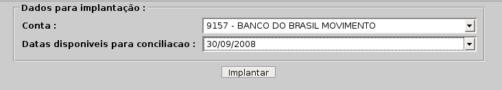
Figura 88
Como já visto, uma conta, partindo de uma data de implantação, pode ter pendências, tanto pelo extrato bancário como pelos seus registros contábil-financeiros (autenticações). Estas pendências podem ser, por exemplo: cheques emitidos e não apresentados, créditos ou débitos em extrato bancário ainda não identificados, entre outros.
Este menu destina-se a indicar em datas anteriores a implantação da conciliação aqueles valores pendentes do lado da Tesouraria. Este trabalho pode ser facilitado sempre que a Tesouraria tem em mãos uma planilha de conciliação que identifique estas pendências.
Para a geração, basta definir a conta bancária, e a data desejada. Para visualizar os registros disponíveis, clicar no botão “Filtrar com os dados selecionados”. Neste momento, o sistema apresentará uma tela onde o usuário poderá clicar no registro que deseja considerar pendente na conciliação e assim que definido, confirmar clicando no botão “Processar”.

Figura 89
Tem a finalidade de desfazer o procedimento de inclusão, em situações de eventual erro na seleção dos valores pendentes para aquele cenário da conta corrente no momento da implantação da conciliação. Os acessos aos dados serão feitos de forma análoga ao menu anterior, bem como a forma de seleção e confirmação.
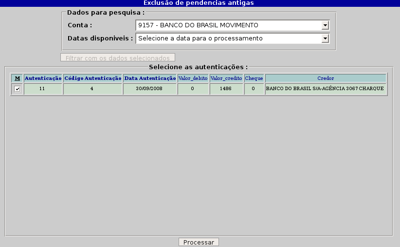
Figura
90
Oferece ao usuário a possibilidade de incluir na conciliação todos aqueles registros pendentes pelo extrato bancário. Também serve para fazer ajustes, tais como informar valores tais como bloqueios de depósitos ainda não liberados, entre outros que interferem no saldo da conta porém não são “conciliáveis” de forma fácil e direta.
Na primeira inclusão por Banco, será necessário informar inicialmente o código mesmo e o número do convênio com a Instituição. O próximo passo será a inclusão dos movimentos propriamente ditos que serão exibidos juntamente com os registros oriundos da carga dos arquivos TXT.
A inclusão dos movimentos se dará pela informação dos seguintes campos:
Código do movimento do banco: este link chama um cadastro padrão para todos os bancos, das chamadas categorias de movimento. São basicamente históricos comuns a todos os extratos bancários, tais como “Saque contra recibo” ou “Cheque Compensado”, entre outros;
Código Conta: destinado a informação da conta bancária que está sendo preparada para conciliação;
Data: data desejada para a implantação da linha no extrato;
Tipo: informação que define se o valor implantado será um débito ou um crédito em conta corrente;
Valor: valor da operação;
Histórico: descrição sucinta da operação;
Documento: descrição sucinta do documento.
Um clique no botão “Incluir” efetiva a operação.

Figura
91
Permite alterar registros implantados. o manuseio dos campos é feito de forma análoga ao da inclusão. Alterados os registros basta confirmar com um clique no botão “Alterar”. A visualização é idêntica a figura 91.
Exclui um registro indesejado na implantação manual dos extratos. O acesso e manuseio é idêntico aos menus anteriores. Selecionado o registro, basta efetivar a exclusão clicando no botão “Excluir”. A visualização é idêntica a figura 91.
Este é o menu que, efetivamente inicia uma conciliação bancária. Para abrir uma conciliação, é pré-requisito que, no mínimo uma tenha sido implantada e recomendável que se tenha avaliado a composição do saldo anterior ou de abertura. Isto significa que é fundamental ao usuário da conciliação fazer uma análise do saldo do extrato bancário na data de abertura (implantação) da conciliação, suas pendências implantadas para o extrato e as autenticações certificando-se do fechamento do saldo, para a garantia de que a conciliação irá fechar sempre que for salva até o fechamento do período avaliado.
Para abrir uma conciliação, o usuário deverá escolher uma conta bancária. Só estarão disponíveis as contas bancárias previamente implantadas e o sistema permitirá a conciliação diária a partir do primeiro dia subseqüente a sua implantação. No momento em que a conciliação for aberta, o usuário poderá realizar todos os procedimentos, manuais ou automáticos, visualizando numa única tela os dados do extrato e das autenticações. A partir de agora, poderão ser visualizadas as opções da funcionalidade.
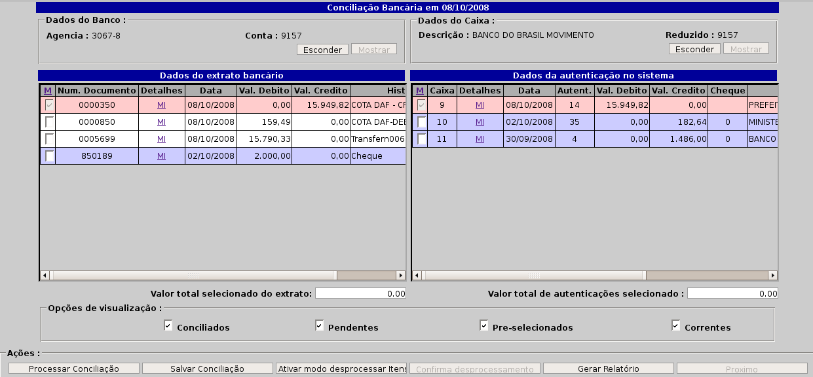
Figura
92
A tela de conciliação apresenta inicialmente os dados bancários da conta selecionada, bem como os dados de cadastro no sistema de Contabilidade.
O lado esquerdo da tela apresenta os dados obtidos com a carga dos arquivos TXT e o lado direito os dados oriundos das autenticações realizadas na Tesouraria. Atualmente, o sistema sugere automaticamente a conciliação de todos os cheques encontrados no dia. Para todos os registros sugeridos, o sistema exibe suas linhas coloridas em laranja. Para todos os registros conciliados em rosa, todos os registros pendentes de conciliações anteriores em cinza e todos os registros pendentes do dia atual.
Para conciliar um registro, basta utilizar as caixas de seleção localizadas do lado esquerdo de cada linha, sendo que o sistema concilia seleções feitas entre linhas uma de cada lado da tela ou mesmo pertencentes ao mesmo quadro. O sistema controla as seleções pelo valor e, sempre que encontrar fechamento, pedirá uma confirmação e conciliará o registro selecionado.
Demais ações:
Opções de visualização: o sistema carrega como padrão a visualização de todos os registros, que são os concliados, pendentes, pré-selecionados e correntes (pendências do dia atual). O usuário, se desejar, pode desmarcar algumas das opções para limitar a visualização dos registros da tela, como por exemplo, não exibir os registros já conciliados;
Salvar Conciliação: salva uma conciliação já concluída (por dia). Sempre que o usuário salvar um dia conciliado, o sistema considerará como pendência, todos os registros que não encontraram correspondência entre extrato e autenticações, ou seja, os não conciliados;
Modo Desprocessar itens: ao clicar neste botão, o sistema irá disponibilizar ao usuário a possibilidade de desfazer uma conciliação considerada equivocada. Basta selecionar um registro e clicar no botão “Confirma desprocessamento”;
Gerar relatório: acionado, emite o relatório contendo a posição da conciliação até o último dia salvo, demonstrando a diferença entre o saldo em extrato bancário e o saldo em Tesouraria, detalhando as pendências que fazem esta composição. Clicando em “OK”, o relatório será impresso de forma analítica e clicando em “Cancelar”, a emissão será sintética;
Próximo: avança automaticamente a conciliação para a próxima data disponível.

Figura
93
Permite acessar uma conciliação aberta e não salva, disponibilizando novamente todas as funcionalidades para este trabalho. Também poderão ser alteradas conciliações já fechadas, onde todas as alterações que promovem reflexos nos dias posteriores são automaticamente contempladas. Ao acessar este menu, o sistema colocará a disposição uma tela para a seleção das datas onde o usuário simplesmente seleciona o registro desejado e acessa a tela correspondente.

Figura 94
|
DBSeller Serviços de Informática Ltda. – www.dbseller.com.br Rua General Câmara, 406/301 – Porto Alegre – Fone: (51) 3028-9170 |
|